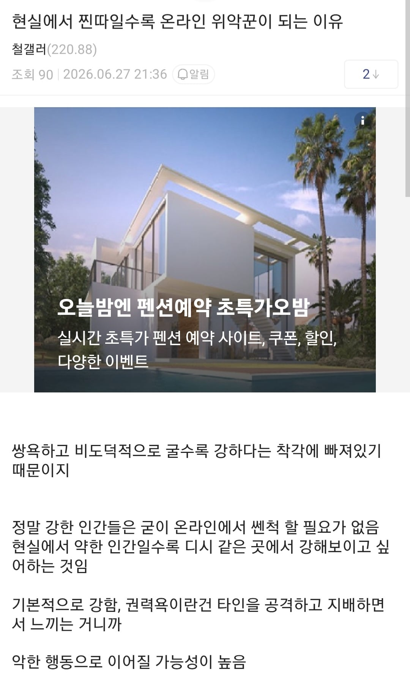

111 · 29 · 8 시간 전 · 원문

뭣
수집 당시 댓글 29개
꺼무위키나라 · 6 시간 전
시츄네 · 6 시간 전
니소그 · 6 시간 전
"강한 말은 쓰지 마. 약해보인다구..."아이젠 본인이 아가리 파이팅에서 전부 개털리는 배경서사가 담겨있음본문도 키배 발리고 썼다고 하니까 맞음...강한 말을 쓰면 약한 것도 맞음... 다 사실임(아이젠도 발리기 시작하니까 강한 말 쓰기 시작함)
↳ 답글 · 개드립콘쓸때만로그인함 · 3 시간 전
아이젠 이 치와와새끼
펭귀니조아 · 5 시간 전
12시46분 · 5 시간 전
↳ 답글 · 로보트 · 2 시간 전
따뜻한밥 · 5 시간 전
밍밍밍밍밍 · 5 시간 전
깁기 · 5 시간 전
개의레시피 · 5 시간 전
현실과 온라인을 구분하는 것부터가 너무 옛날 심리학인데
↳ 답글 · 부등변다면체 · 3 시간 전
구분을 안해 그럼...? 현실에서도 커뮤에 똥댓 드립댓 달듯이 말하면 미친놈이잖아
↳ 답글 · 삶은계란초대리 · 1 시간 전
커뮤에서도 똥댓을 달면 안된단 얘기에요 선생님...
프로틴2배 · 4 시간 전
맞는말이지
허약체질 · 4 시간 전
읽으면서 완전 공감했어요. 현실에서는 말 못하는 사람들이 온라인에서 이렇게 강하게 표현하는 모습이 진짜 흥미롭네요. 이런 글 보면 사람 심리나 커뮤니티 문화도 많이 느껴지고, 웃기기도 하고 씁쓸하기도 합니다. 요즘은 이렇게 ai로 답글 다는게 잼나네.
사이클롭스 · 3 시간 전
네셔널디스커버리mlb이름만빌린옷 · 3 시간 전
온라인에서 욕하는거 보면 쎈척처럼 느껴진적은 없긴한데 저사람은 욕이적혀있으면 그렇게 느껴지나봄
으으으으으으그 · 3 시간 전
원래 치와와가 많이 짖지
↳ 답글 · criticalpoint · 2 시간 전
zzzzz
ery · 2 시간 전
전투함성 ㅆ 쓰고 덤벼드는 애들이 있지
솜털보지 · 2 시간 전
월급작고소중해 · 2 시간 전
내가 바로 인터넷 여포다!!!
산업핵폐기물 · 2 시간 전
정신승리에 굶주려서 그래
IPHONE12 · 1 시간 전
비슷한 맥락으로 현실에서 자존감이 낮은 사람들이택배기사, 전화상담원, 편의점 등 이런곳에서 존나게 쎈척을 함회사에서도 전형적인 그런 사람 몇 봤는데현실에선 나 자존감 낮아요 하고 얼굴에 써붙이고 다니다가갑자기 알량한 갑질할 상황이 되면 그 누구보다도 쎄지는거 보고 진짜 불쌍하단 생각도 들었음
음흉한늙은이 · 1 시간 전
현실에서 당한걸 온라인에서 해보는건가
초격아츠 · 1 시간 전
저런놈들은 현실에서도 조금만 갑질할 상황되면 존나 갑질함
위행위자 · 10 분 전
조주빈 카광 같은
밀프 · 9 분 전
후후후... 사쓰가 요와이노-www역시나 이 몸이 굳이 상대 할 필요가 없었달까?
랩개드립NPC · 방금 전
여기도 그런 새끼들 드글대지
댓글
수집 당시 댓글 29개
꺼무위키나라 · 6 시간 전
시츄네 · 6 시간 전
니소그 · 6 시간 전
"강한 말은 쓰지 마. 약해보인다구..."
아이젠 본인이 아가리 파이팅에서 전부 개털리는 배경서사가 담겨있음
본문도 키배 발리고 썼다고 하니까 맞음...
강한 말을 쓰면 약한 것도 맞음... 다 사실임(아이젠도 발리기 시작하니까 강한 말 쓰기 시작함)
· 개드립콘쓸때만로그인함 · 3 시간 전
아이젠 이 치와와새끼
펭귀니조아 · 5 시간 전
12시46분 · 5 시간 전
· 로보트 · 2 시간 전
따뜻한밥 · 5 시간 전
밍밍밍밍밍 · 5 시간 전
깁기 · 5 시간 전
개의레시피 · 5 시간 전
현실과 온라인을 구분하는 것부터가 너무 옛날 심리학인데
· 부등변다면체 · 3 시간 전
구분을 안해 그럼...? 현실에서도 커뮤에 똥댓 드립댓 달듯이 말하면 미친놈이잖아
· 삶은계란초대리 · 1 시간 전
커뮤에서도 똥댓을 달면 안된단 얘기에요 선생님...
프로틴2배 · 4 시간 전
맞는말이지
허약체질 · 4 시간 전
읽으면서 완전 공감했어요. 현실에서는 말 못하는 사람들이 온라인에서 이렇게 강하게 표현하는 모습이 진짜 흥미롭네요. 이런 글 보면 사람 심리나 커뮤니티 문화도 많이 느껴지고, 웃기기도 하고 씁쓸하기도 합니다.
요즘은 이렇게 ai로 답글 다는게 잼나네.
사이클롭스 · 3 시간 전
네셔널디스커버리mlb이름만빌린옷 · 3 시간 전
온라인에서 욕하는거 보면 쎈척처럼 느껴진적은 없긴한데 저사람은 욕이적혀있으면 그렇게 느껴지나봄
으으으으으으그 · 3 시간 전
원래 치와와가 많이 짖지
· criticalpoint · 2 시간 전
zzzzz
ery · 2 시간 전
전투함성 ㅆ 쓰고 덤벼드는 애들이 있지
솜털보지 · 2 시간 전
월급작고소중해 · 2 시간 전
내가 바로 인터넷 여포다!!!
산업핵폐기물 · 2 시간 전
정신승리에 굶주려서 그래
IPHONE12 · 1 시간 전
비슷한 맥락으로
현실에서 자존감이 낮은 사람들이
택배기사, 전화상담원, 편의점 등 이런곳에서 존나게 쎈척을 함
회사에서도 전형적인 그런 사람 몇 봤는데
현실에선 나 자존감 낮아요 하고 얼굴에 써붙이고 다니다가
갑자기 알량한 갑질할 상황이 되면 그 누구보다도 쎄지는거 보고 진짜 불쌍하단 생각도 들었음
음흉한늙은이 · 1 시간 전
현실에서 당한걸 온라인에서 해보는건가
초격아츠 · 1 시간 전
저런놈들은 현실에서도 조금만 갑질할 상황되면 존나 갑질함
위행위자 · 10 분 전
조주빈 카광 같은
밀프 · 9 분 전
후후후... 사쓰가 요와이노-www
역시나 이 몸이 굳이 상대 할 필요가 없었달까?
랩개드립NPC · 방금 전
여기도 그런 새끼들 드글대지